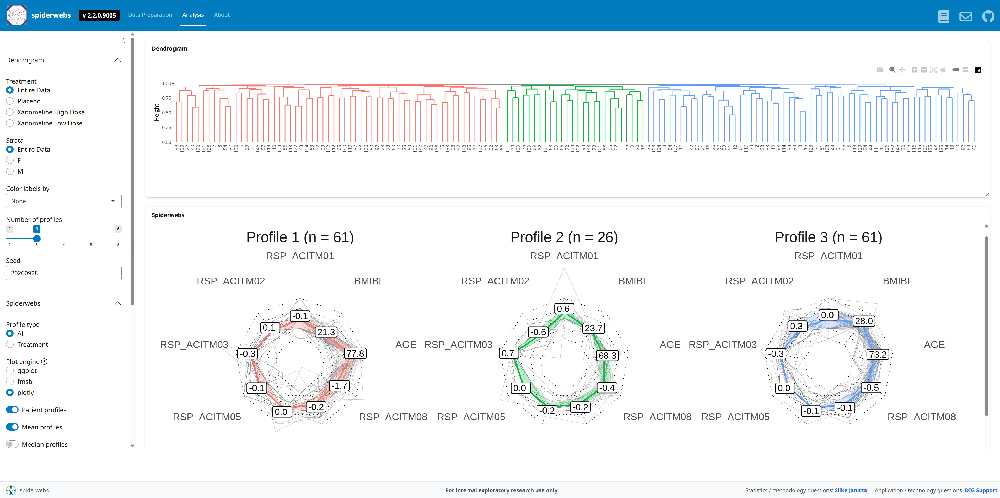

spiderwebs is an unsupervised AI/ML approach for identifying patient groupings or clusters based on a selection of pre-defined outcome variables, referred to as the response profile. spiderwebs can be used to explore whether patient groups with different multidimensional response profiles are present in the data. The response profile can be defined by a selection of primary, secondary, and/or exploratory variables, and may also combine efficacy and safety variables of interest.
For example, two patient groups may show a similar overall treatment response when considering a single summary endpoint, but their response profiles across multiple outcomes may differ substantially. One group may show strong efficacy improvement without worsening in relevant laboratory or safety parameters, whereas another group may show a comparable efficacy improvement together with a deterioration in safety parameters. spiderwebs helps uncover such hidden patterns in the data by identifying groups of patients with similar multidimensional response profiles—patterns that may remain invisible when focusing on a single outcome alone.